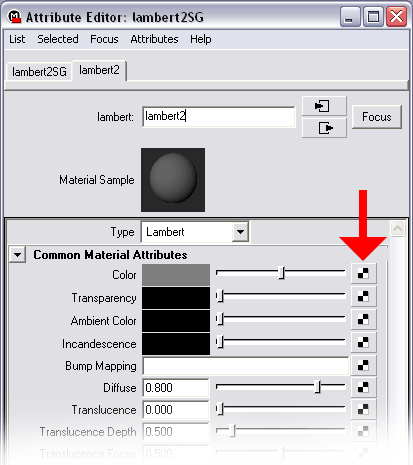
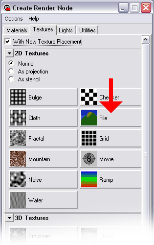
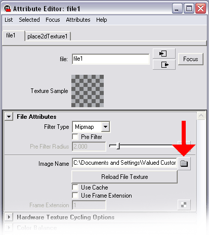
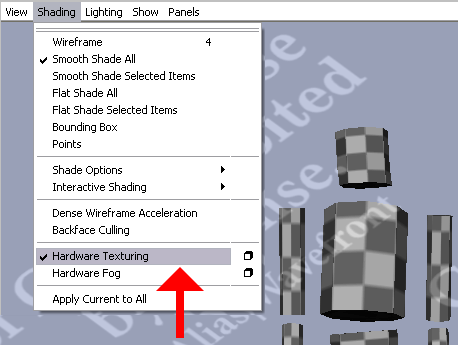

Maya PLE Character Model Tutorial Part 4
Texturing TinCanMan
Skinning a model properly is a topic is worthy of an extensive tutorial all its own, so rather than hold up the progress toward getting TinCanMan into UT2003, a simple texture will be applied.
The model's component cylinders were originally created with the Normalize the Whole Object option, which applies a set of UV coordinates to the mesh. Any texture applied will adhere to those coordinates, as the UV mapping is preserved through the modeling stages done so far.
To apply a file-based texture in Maya PLE (FIG. 25A-D):
85. Select SkinMesh. Right click and hold on SkinMesh and choose Materials>Assign New Material>Lambert from the rollouts. (Other Material types can be probably be used as well, I just always use Lambert.) An Attribute Editor dialog for Lambert'n'SG opens. 'n' will be a number.

FIG. 25A Initial dialog for applying a texture |
86. In the Attributes list, expand Common Material Attributes. The top Attribute in this section is Color. Click the checkered-icon button at the right of the Color slider.
87. A Create Render Node dialog opens (FIG. 25B). With New Texture Placement should be checked. Expand the 2D Textures section (NOTE: Some Attribute/Node dialog sections described here may be already expanded when the dialog opens). The 'Normal' radio button should be active. Click the File button (second from the top on the right-hand column of the 2D Textures section).

FIG. 25B Create Render Node dialog |
88. The Create Render Node dialog closes, and the Attribute Editor now shows attributes for file'n' ('n' is a number). Expand File Attributes, find the Image Name text input field, click the folder-icon button at the right.
89. A Windows File Open dialog opens. Navigate to & select your texture file, click Open. The Attribute Editor displays the selected file (FIG.25C).

FIG. 25C Texture file specs displayed in the Attribute Editor |
Make sure Shading>Hardware Texturing for the active viewport is enabled, or the file texture won't be displayed.

FIG. 25D Enable Hardware Texturing in viewport |
Last, but certainly not least, Exporting TinCanMan to UEd.